Troppa teoria
Il contenuto è corretto, ma resta distante dalle pressioni, dai ruoli e dai problemi reali del team.
Corsi aziendali esperienziali
BeOx progetta e porta in azienda corsi di formazione aziendale esperienziale con metafora sportiva per team, manager, HR e prime linee. Lavoriamo su leadership, team working, comunicazione efficace, gestione dei conflitti, stress management, time management, decision making, employer branding e AI. Non lezioni frontali, ma workshop, role-play, brainstorming e confronto guidato.
Il limite della formazione solo teorica
Molti corsi aziendali restano troppo frontali: il formatore spiega, i partecipanti ascoltano, prendono qualche appunto e poi tornano alle stesse dinamiche. BeOx costruisce corsi di formazione esperienziale più attivi, in cui le persone ragionano, sperimentano, discutono e collegano subito il tema alla propria realtà aziendale.
Il contenuto è corretto, ma resta distante dalle pressioni, dai ruoli e dai problemi reali del team.
Se le persone ascoltano soltanto, faticano a trasformare il tema in consapevolezza e azione.
Si parla di leadership, comunicazione o stress senza allenare casi, dialoghi, decisioni e comportamenti.
Il corso finisce, ma il team non porta con se una metafora condivisa per leggere le sfide quotidiane.
Per chi è pensata
Ogni corso viene progettato sul destinatario: cambia il linguaggio, cambia la profondità, ma resta il focus su comportamenti osservabili e trasferimento nel lavoro quotidiano.
Per costruire percorsi formativi concreti, coinvolgenti e coerenti con i bisogni del team.
Per allenare leadership, followership, decisione, feedback, pressione e gestione delle persone.
Per lavorare su collaborazione, comunicazione, conflitto, ruoli, fiducia e responsabilità.
Per rafforzare metodo, resilienza, time management, gestione stress e orientamento al risultato.
Prima leggiamo il bisogno
Prima di progettare un corso aziendale, BeOx aiuta HR e manager a leggere segnali, percezioni e priorità: comunicazione, stress, leadership, collaborazione, gestione del tempo, conflitto e decision making.
Metafora sport-azienda
Lo sport rende immediati concetti che in azienda spesso restano astratti: allenamento, ruolo, fiducia, pressione, errore, strategia, concentrazione, ritmo, recupero e decisione.
Dentro i corsi BeOx questi elementi diventano casi, esercitazioni, domande guida, role-play e debrief per aiutare le persone a riconoscere le proprie dinamiche e sperimentare modi diversi di agire.
Progetta un corso su misuraFormazione esperienziale
Il formatore non parla tutto il tempo. Alterna contenuto, stimoli, metafore sportive, domande, attivazioni, lavori in sottogruppi e momenti di debrief. Questo rende il corso più attivo, coinvolgente e soprattutto più utile.
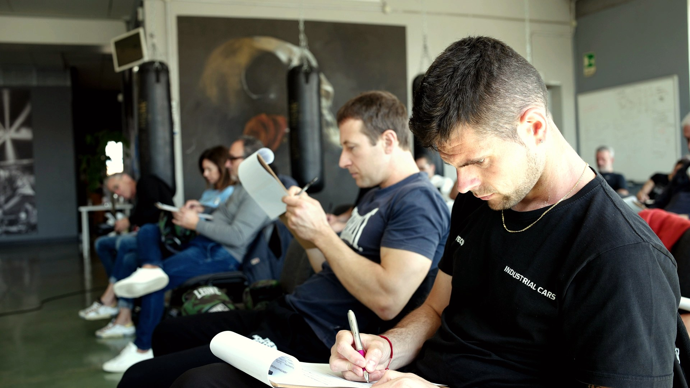
Corsi aziendali possibili
Ogni tema può diventare un modulo singolo, un percorso in più incontri o una academy interna. Il taglio viene adattato a pubblico, obiettivi, settore e livello di profondità richiesto.
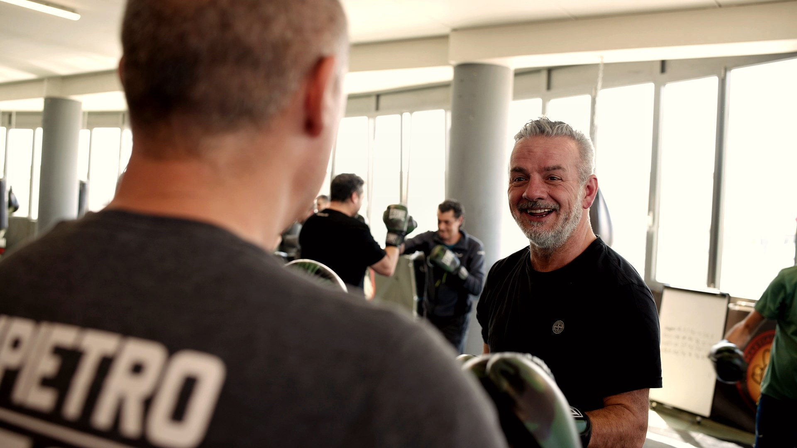
Un corso per passare dall'io al noi: ruoli, fiducia, interdipendenza, comunicazione e responsabilità condivisa, usando la squadra sportiva come metafora operativa.
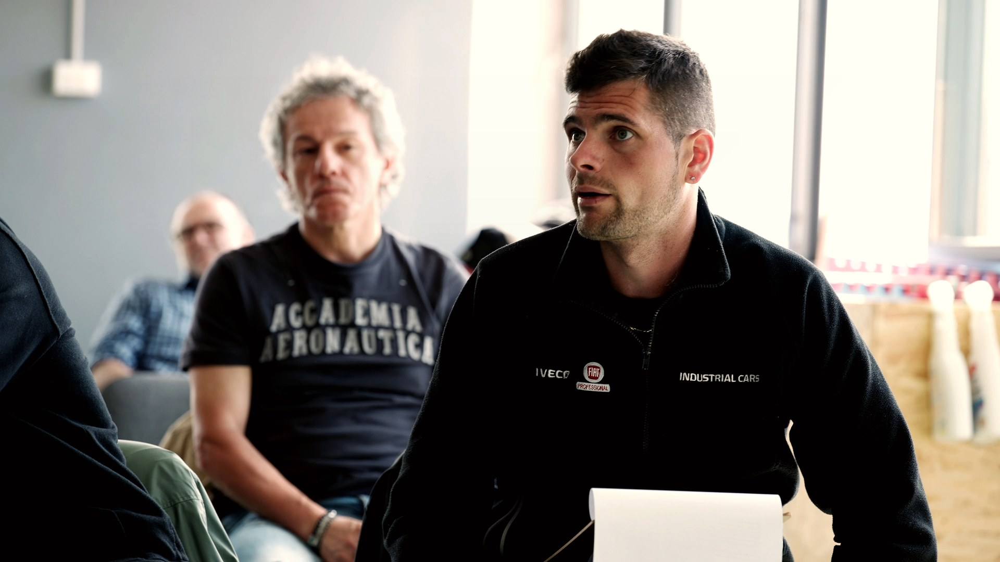
Allenare la capacità di guidare e quella di contribuire: responsabilità, ascolto, fiducia nel metodo, feedback e decisione nei momenti complessi.
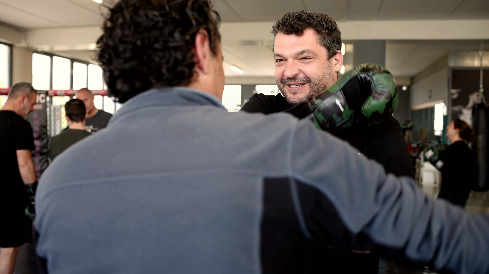
La metafora del ring aiuta a distinguere attacco, difesa, confine e confronto. Un corso per gestire tensioni senza bloccare relazione e risultati.
Come l'angolo nello sport, anche in azienda la comunicazione deve essere chiara, tempestiva e utile. Allenamento su ascolto, feedback, messaggi e coordinamento.
Un corso di stress management aziendale per riconoscere segnali, pressione, automatismi e risorse personali. La metafora sportiva aiuta a lavorare su respiro, focus, recupero e lucidità.
Come in allenamento, non tutto ha lo stesso peso. Un corso di time management per distinguere priorità, ritmo, energia, recupero, pianificazione e gestione delle urgenze.
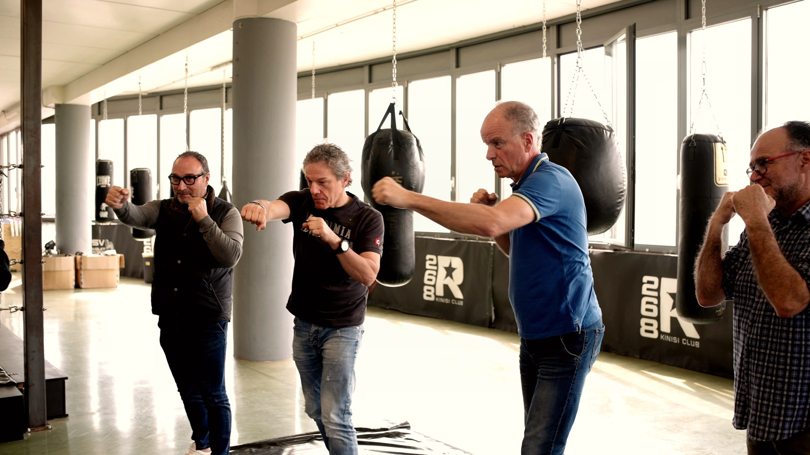
Risolvere problemi non basta: serve decidere. La metafora sportiva aiuta a lavorare su analisi, opzioni, rischio, tempo, responsabilità e azione.

Ogni squadra attrae talenti quando comunica identità, cultura e senso di appartenenza. Un corso per usare marketing e storytelling a supporto dell'employer branding e dell'attrattività aziendale.

Come nello sport i dati aiutano ad allenare meglio, in azienda l'AI può supportare analisi, processi, comunicazione e decisioni. Un corso pratico per usarla con metodo.
Metodo BeOx
Ogni corso nasce da un brief: obiettivi, destinatari, criticità, contesto, livello di profondità e risultati attesi. Da lì costruiamo contenuti, metafore, esercitazioni e strumenti.
Raccogliamo bisogni, destinatari, criticità, priorità formative e risultati desiderati.
Definiamo scaletta, contenuti, metafora sportiva, esercitazioni e livello di interazione.
Alterniamo contenuto, brainstorming, simulazioni, lavori in gruppo e casi aziendali.
Facciamo emergere comportamenti, linguaggi, automatismi e possibilità di miglioramento.
Colleghiamo la metafora sportiva a ruoli, relazioni, processi e situazioni quotidiane.
Chiudiamo con impegni, routine, domande guida e strumenti da riportare nel lavoro.
Alcune delle realtà con cui collaboriamo per formazione aziendale, team building, eventi, percorsi sportivi e sviluppo dei team.
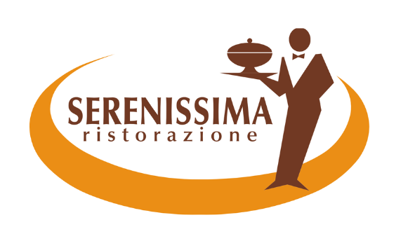
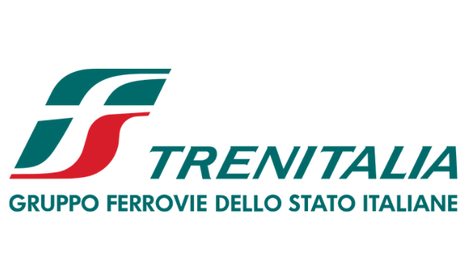
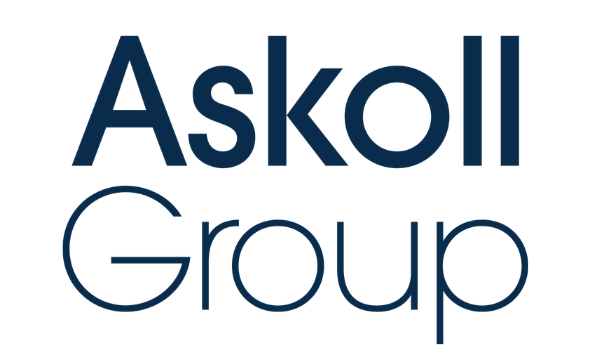
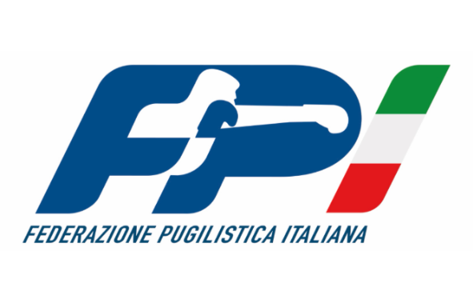
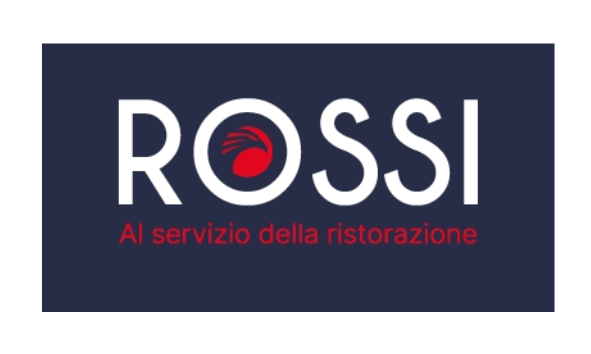
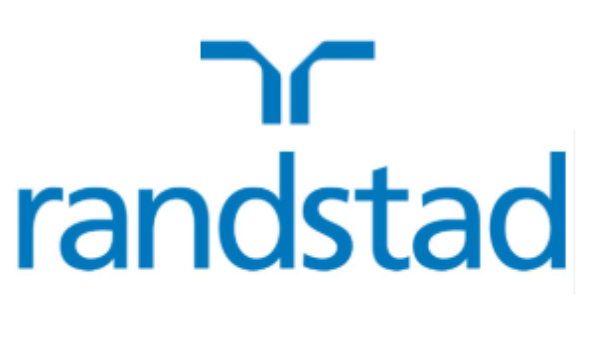
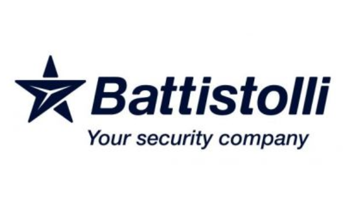
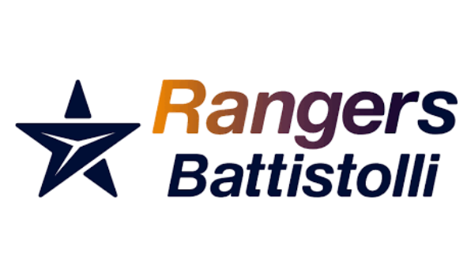
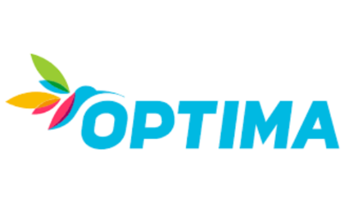
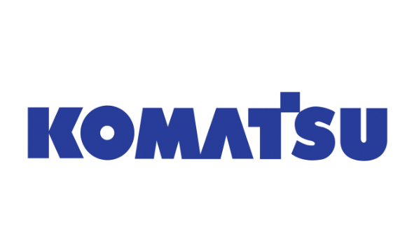
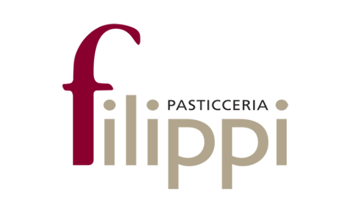
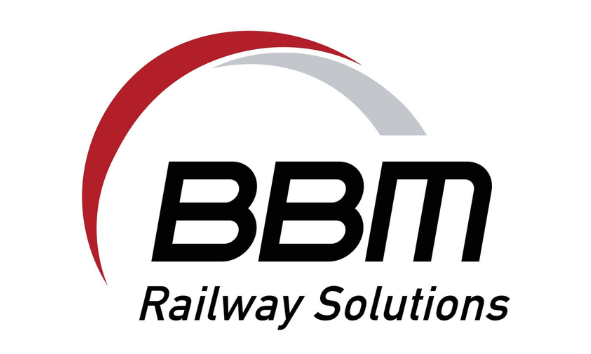
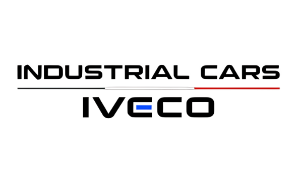
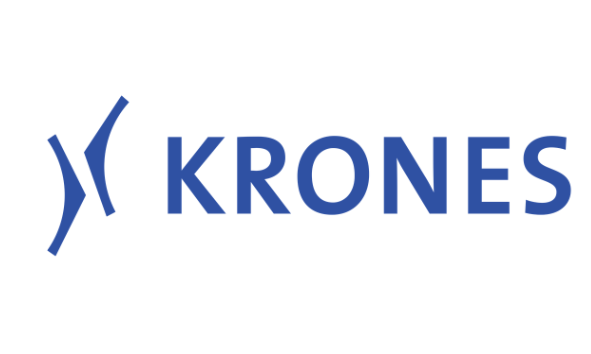
Cosa alleniamo
Ogni corso porta le persone a lavorare su comportamenti concreti, non solo su definizioni: come si comunica, come si decide, come si gestisce pressione, come si collabora.
Ruoli, fiducia, responsabilità condivisa e passaggio dall'io al noi.
Guida, followership, responsabilità, feedback e decisione nei momenti complessi.
Ascolto, messaggi chiari, feedback, coordinamento e gestione delle incomprensioni.
Trasformare lo scontro in confronto costruttivo e responsabilità relazionale.
Allenare focus, recupero, energia, lucidità e regolazione nei momenti di pressione.
Priorità, ritmo, pianificazione, gestione delle urgenze e sostenibilità.
Dal problema alla scelta: analisi, rischio, responsabilità e azione.
Usare l'AI per leggere meglio dati, processi, priorità e supportare il lavoro quotidiano.
Perché la metafora sportiva funziona
In azienda come nello sport, il risultato non nasce da una frase motivazionale: nasce da allenamento, metodo, fiducia, ritmo, feedback, gestione dell'errore e capacità di restare lucidi quando aumenta la pressione.
Vedi come diventa metodoFormazione che resta
Il valore di un corso non si misura solo dal gradimento in aula. Si misura da quanto le persone riescono a riportare nel lavoro quotidiano: un modo diverso di comunicare, decidere, gestire la pressione, dare feedback o collaborare.
Costruisci il percorso giustoQuando scegliere BeOx
Quando la formazione frontale non genera più attenzione o cambiamento.
Quando vuoi lavorare su comportamenti concreti, non solo su concetti.
Quando team e manager devono confrontarsi su casi reali e dinamiche quotidiane.
Quando vuoi rendere memorabili temi come leadership, stress, conflitto e comunicazione.
Quando serve un percorso formativo su misura, non un corso standard.
Quando vuoi integrare metafora sportiva, workshop, role-play e debrief operativo.
Cosa resta dopo
Non solo contenuti, ma un linguaggio comune e strumenti per leggere meglio cio che succede nel team e nel lavoro quotidiano.
Metafore semplici per parlare di ruolo, pressione, errore, fiducia e obiettivi.
I partecipanti riconoscono dinamiche, automatismi e comportamenti da allenare.
Domande guida, routine, accordi, esercizi e azioni da riportare nel proprio ruolo.
La formazione diventa esperienza, non solo ascolto passivo.
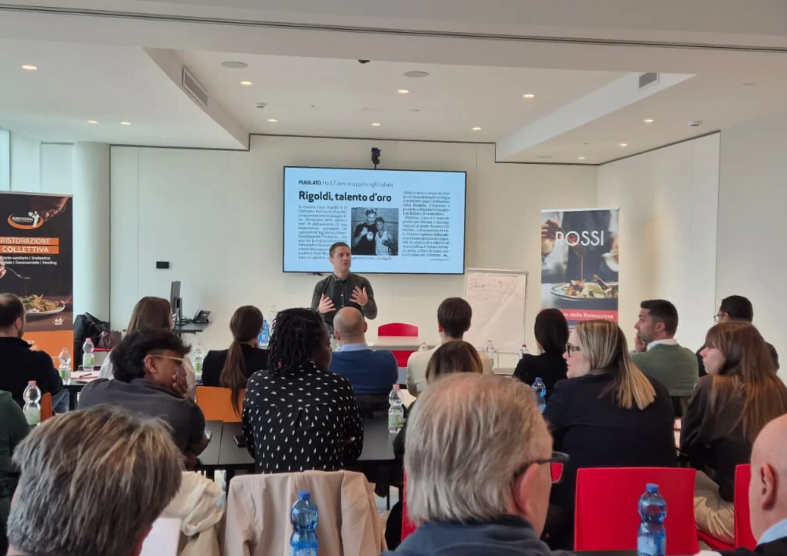
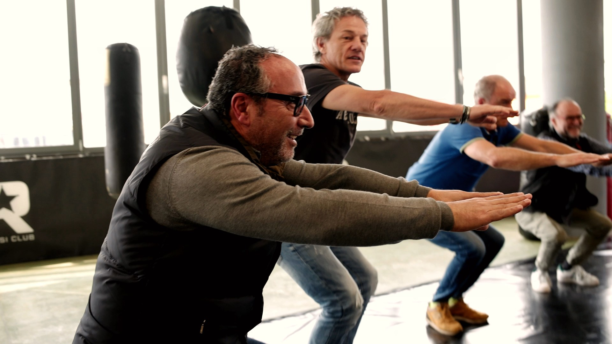
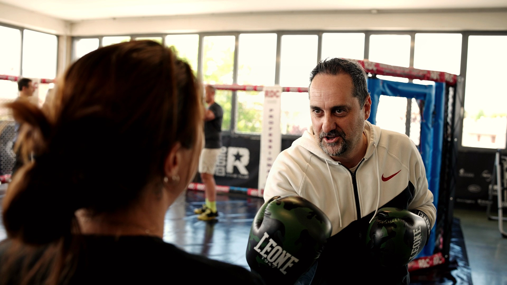
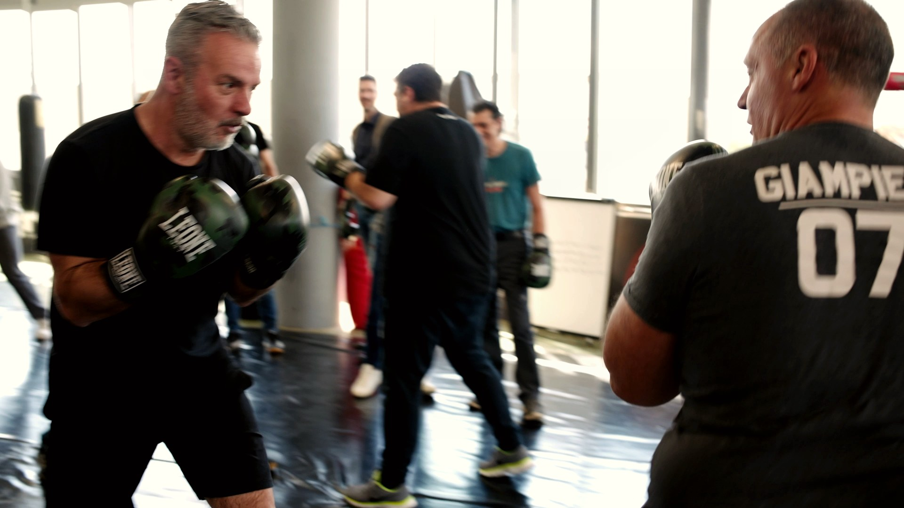
FAQ
Sono corsi di formazione aziendale esperienziale che usano lo sport come linguaggio semplice e concreto per lavorare su leadership, team working, comunicazione efficace, gestione dello stress, conflitto, time management, problem solving, decision making, employer branding e AI. Il focus non è lo sport in sé, ma il comportamento professionale.
Gli speech hanno un taglio più ispirazionale e ad alto impatto. I corsi BeOx sono veri percorsi formativi: prevedono contenuto, workshop, role-play, brainstorming, confronto, casi aziendali e debrief.
Sono pratici e interattivi. Il formatore alterna concetti, metafore sportive, esempi, attivazioni, lavori in gruppo, simulazioni e momenti di trasferimento operativo.
La durata viene progettata sul bisogno: mezza giornata, una giornata, più incontri o un percorso modulare. Dipende da obiettivi, numero di partecipanti, tema e livello di profondità richiesto.
Da individuo a team, leadership vs followership, conflitto costruttivo, comunicazione efficace, gestione stress e ansia, time management, problem solving, decision making, marketing per l'employer branding e AI nei processi aziendali.
Sì. BeOx adatta casi, linguaggio, esempi, esercitazioni e debrief al settore, al pubblico e alle dinamiche reali dell'azienda.
Sì. La metafora sportiva serve a rendere immediati concetti come allenamento, ruolo, pressione, errore, feedback e team. Non richiede competenze sportive ai partecipanti.
Sì. BeOx progetta formazione aziendale con metafora sportiva in tutta Italia: Lombardia, Veneto, Lazio, Piemonte, Emilia-Romagna, Toscana, Campania e Puglia, con corsi a Milano, Roma, Torino, Bologna, Padova, Verona, Vicenza, Venezia, Treviso, Firenze, Genova, Napoli, Bari e altre città su richiesta.
Sì. Ogni modulo può essere inserito in una academy aziendale, in un percorso leadership, in una formazione manageriale, in un onboarding evoluto o in un piano di sviluppo HR.
Il costo dipende da durata, personalizzazione, numero di partecipanti, tema, sede, materiali e livello di progettazione. Per una proposta accurata è utile indicare obiettivo, pubblico, periodo e città.
Richiedi una proposta
Raccontaci obiettivo, destinatari, tema e contesto. Ti aiuteremo a capire quale modulo o percorso può generare più valore per il tuo team.